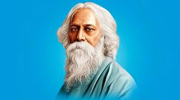

Rabindranath Tagore
1861-1941
The World Poet
Rabindranath Tagore was a Bengali poet, short-story writer, song composer, playwright, and painter. He introduced new prose and verse forms and the use of colloquial language into Bengali literature, helped introduce Indian culture to the West and vice versa, and is generally regarded as the outstanding creative artist of early 20th-century India.
Biographies
- Full Name: Rabindranath Tagore (Rabīndranāth Ṭhākur)
- Birth: May 7, 1861, in Calcutta (now Kolkata), India.
- Death: August 7, 1941, in Calcutta, India.
- Occupation: Poet, philosopher, playwright, composer, novelist, educator, painter, and social reformer.
- Notable Achievement: First non-European to win the Nobel Prize in Literature in 1913 for his book Gitanjali (Song Offerings).
- Education: Briefly attended University College London but returned to India without a degree. Largely self-educated.
- Key Literary Works:
- Gitanjali (Song Offerings)
- Ghare Baire (The Home and the World)
- Chokher Bali (Grains of Sand)
- Kabuliwala (The Fruitseller from Kabul)
- Philosophy: Deeply influenced by the Upanishads and Indian spiritual traditions, he advocated for universalism and humanism.
- Establishment of Visva-Bharati University: Founded this school in 1921 at Santiniketan, emphasizing holistic education and integration of the arts, philosophy, and culture.
- Social Reformer: Championed causes like education reform, rural upliftment, and opposition to the caste system and British colonial rule.
- Music Contributions: Composed thousands of songs (Rabindra Sangeet), including the national anthems of India ("Jana Gana Mana") and Bangladesh ("Amar Shonar Bangla").
- Art and Painting: Began painting in his later years, creating a unique style influenced by primitive art and modernism.
- International Influence: Traveled widely across Europe, the U.S., Japan, and other parts of Asia, spreading Indian culture and advocating for cultural exchange.